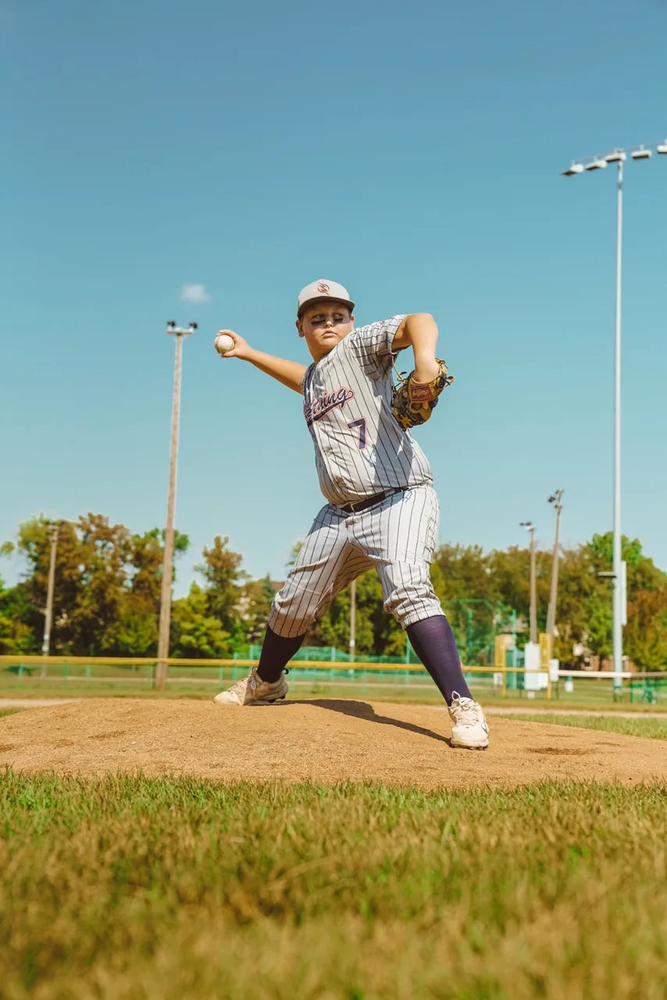
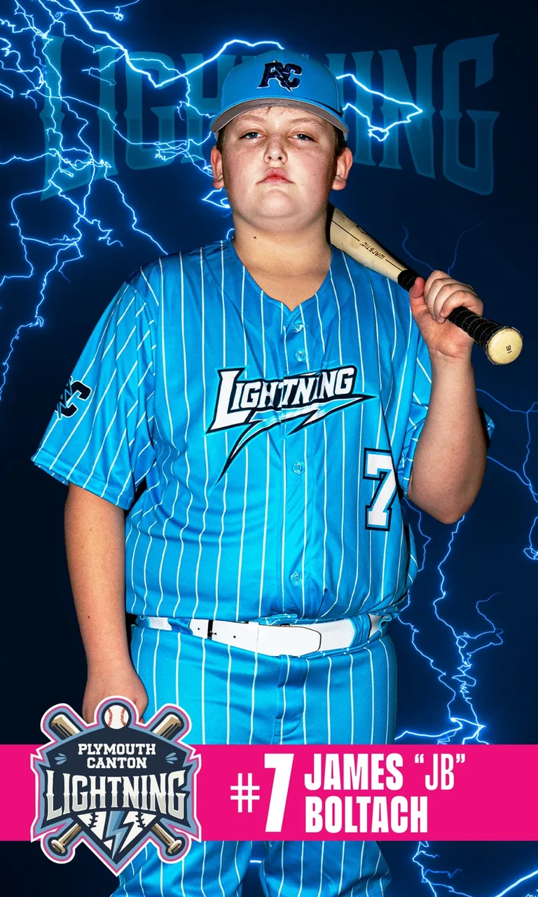
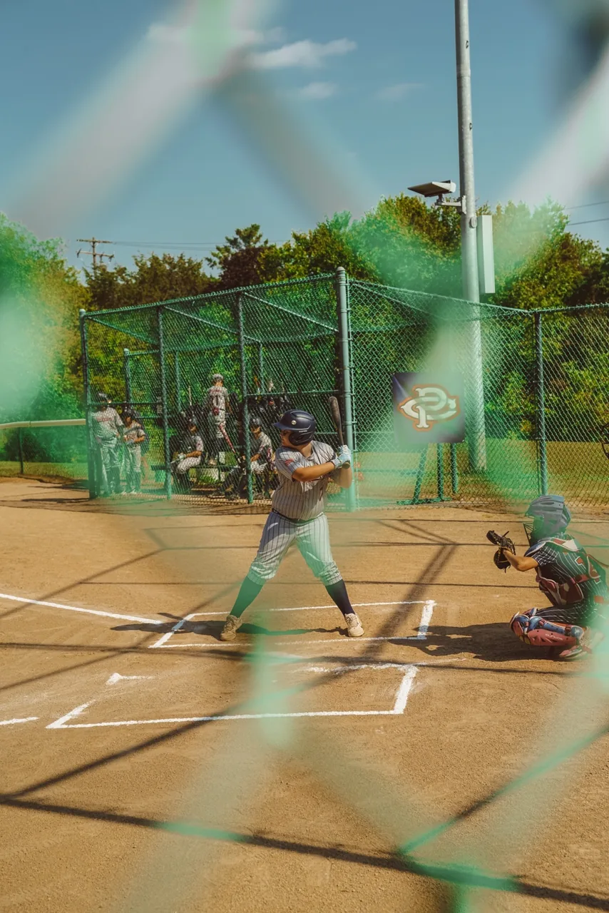

James Boltach #7
P / 1B / 3B • Bats Left • Throws Right
Coach Snapshot
Left-handed bat, right-handed arm, and a true two-way profile with production as a hitter, pitcher, first baseman, and third baseman.
James has developed with PCLL Lightning since 9U and currently profiles as one of the roster’s top two-way contributors. He combines quality at-bats, hard contact, extra-base impact, pitching workload, strikeout ability, and defensive flexibility at both corner infield spots.
Player Info

Player Strength Profile
James’ strongest value is versatility. He can help a roster as a pitcher, a left-handed bat, and a corner infielder. His data shows meaningful production, not just participation.
Offensive Profile
| Metric | James | Team Context |
|---|---|---|
| Games Played | 27 | Full-season contributor |
| Plate Appearances | 70 | High-volume role |
| QAB% | 58.57 | 2nd by only 0.10% |
| Hard Hit Balls | 19 | 2nd on team |
| Extra-Base Hits | 7 | Tied among top group |
| 6+ Outcomes | 16 | Team leader |
| BB/K | 1.000 | Walks equal strikeouts |

Offensive Impact Visuals
QAB% Leaders
Hard Hit Balls
Pitching Profile
| Metric | James | Team Context |
|---|---|---|
| Innings Pitched | 25.2 | 2nd on team |
| Games Pitched | 15 | Trusted often |
| Games Started | 7 | Primary starter role |
| Strikeouts | 36 | 2nd on team |
| WHIP | 1.870 | Strong for 11U workload |
| ERA | 6.312 | Better than team ERA |
| Opponent BA | .262 | Best among main arms |
| Velocity | 59 MPH | Strong 11U arm |
Two-Way Radar
A quick visual of James’ roster value across hitting, pitching, and defensive versatility.
Pitching Impact Visuals
Pitching Workload
Opponent Batting Average
Offensive Strengths
Productive At-BatsHard ContactGap Power
Creates quality plate appearances, drives the ball hard, and produces high-value offensive outcomes.
Pitching Strengths
Starter ExperienceLow BAAStrikeouts
Trusted in meaningful innings with the ability to limit opponents while missing bats.
Defensive Fit
PitcherFirst BaseThird Base
Corner-infield and pitching versatility gives coaches roster options and matchup flexibility.
Coach / Scout Summary
James Boltach is a left-handed hitter and right-handed thrower who profiles as a competitive 11U two-way player. He has played with PCLL Lightning since 9U and currently contributes as a pitcher, first baseman, and third baseman. His current-season profile shows top-tier quality at-bats, strong hard-hit production, extra-base impact, and leadership in high-value offensive outcomes. On the mound, he is one of the team’s primary pitchers, ranking second in innings and strikeouts while producing the strongest opponent batting average among the team’s main pitching workloads. He offers travel teams a left-handed bat, pitching depth, and defensive versatility at both corner infield spots.
Contact
For game schedules, video, or recruiting questions, reach James’s family directly.